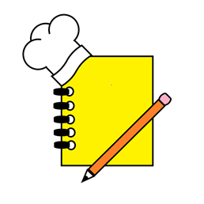
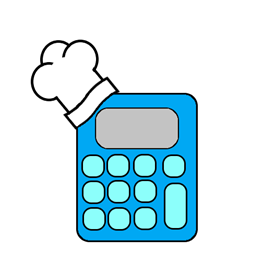

During the Development of Yes Chef one of first obstacles we faced as a team was “How will Yes Chef look?”. So, our design team got together to work on many different concepts for our app. Different versions of logos, fonts and even 3D renderings were created to help bring together how we wanted to present Yes Chef to our users and the world. Choosing a set design was not a solo task, but was an overall team vote that decided the final look for Yes Chef.

Notebook with Chef Hat Logo
This logo very quickly became the teams favourite as we believe it successfully captures all the elements that make up our Yes Chef App.

Calculator with Chef Hat Logo
Pencil with Chef Hat Logo
Stick Note Logo
Font Ideas list 1
Font Ideas List 2